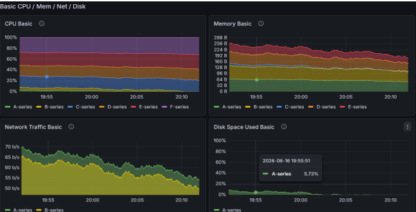
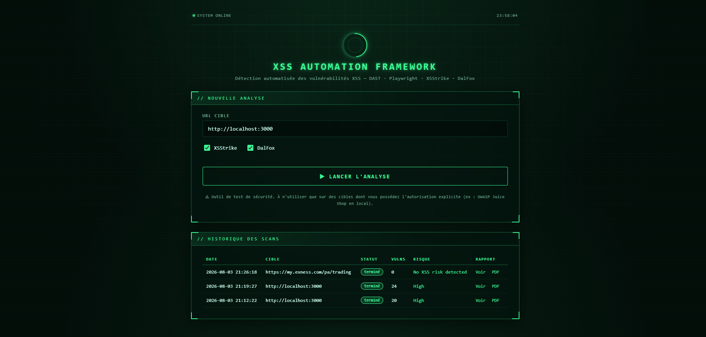
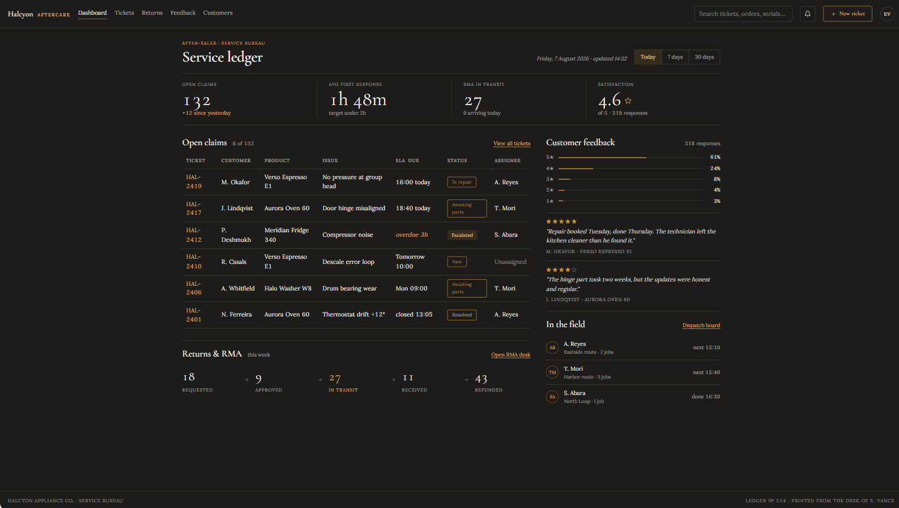
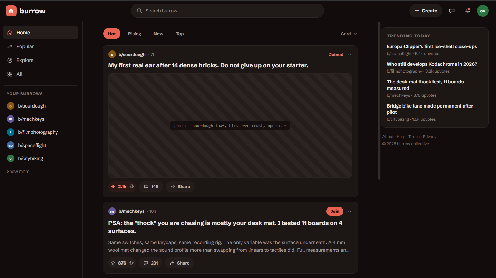
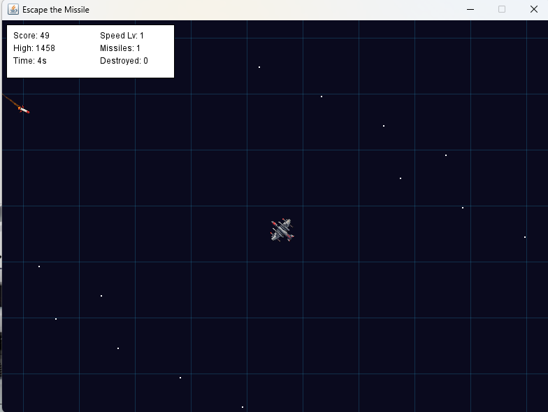

Hi, my name is
I'm a computer science engineering student oriented toward cybersecurity and penetration testing, with a strong focus on identifying vulnerabilities, securing digital systems, integrating security into cloud & DevSecOps pipelines, and building full-stack applications.
I'm a computer science engineer specializing in cybersecurity and penetration testing, focused on identifying vulnerabilities and building resilient, secure systems. I'm driven by understanding how systems can be exploited in order to defend them better — combining technical depth with a strategic mindset to strengthen digital defenses. My interests span ethical hacking, network and web application security, vulnerability assessment, and cloud security, and I continuously stay current with emerging threats and security techniques. Curious and analytical by nature, I'm committed to building innovative security solutions, collaborating effectively with teams, and contributing to a safer, more trustworthy digital world.





19 certificates earned on Coursera, covering cloud & Linux, software engineering, data science, and project management.
Native · C2
Advanced · B2
Advanced · B2
Feel free to reach out — I'll get back to you as soon as I can.